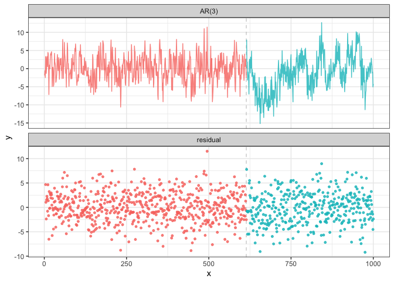

Overview
The fastcpd (fast change point detection) is a fast implmentation of change point detection methods in R. The fastcpd package is designed to find change points in a fast manner. It is easy to install and extensible to all kinds of change point problems with a user specified cost function apart from the built-in cost functions.
To learn more behind the algorithms:
Installation
# Install from CRAN
install.packages("fastcpd")Development version
# Development version from r-universe with CRAN version as a fallback
install.packages(
"fastcpd",
repos = c("https://doccstat.r-universe.dev", "https://cloud.r-project.org")
)
## install.packages("pak")
pak::pak("doccstat/fastcpd")
## install.packages("devtools")
devtools::install_github("doccstat/fastcpd")With mamba or conda (available soon)
FAQ
Package dependencies
fastcpd depends on the following packages:
- Rcpp, for C++ source code compilation.
- RcppArmadillo, for fast linear algebra.
- fastglm, for fast generalized linear models.
- glmnet, for penalized regression.
- ggplot2, for data visualization.
If you’re compiling from source, you can run the following command to see the complete set of system packages needed on your machine.
pak::pkg_sysreqs("doccstat/fastcpd")
#> ── Install scripts ───────────────────────────────────────────── Ubuntu 20.04
#> apt-get -y update
#> apt-get -y install libcurl4-openssl-dev libssl-dev zlib1g-dev make
#>
#> ── Packages and their system dependencies ───────────────────────────────────
#> curl – libcurl4-openssl-dev, libssl-dev
#> data.table – zlib1g-dev
#> fs – make
#> openssl – libssl-devShould I install suggested packages?
The suggested packages are not required for the main functionality of the package. They are only required for the vignettes. If you want to learn more about the package comparison and other vignettes, you could either check out vignettes on CRAN or pkgdown generated documentation.
I countered problems related to gfortran on Mac OSX or Linux!
The package should be able to install on Mac and any Linux distribution without any problems if all the dependencies are installed. However, if you encountered problems related to gfortran, it might be because RcppArmadillo is not installed previously. Try Mac OSX stackoverflow solution or Linux stackover solution if you have trouble installing RcppArmadillo.
Usage
set.seed(1)
n <- 1000
x <- rep(0, n + 3)
for (i in 1:600) {
x[i + 3] <- 0.6 * x[i + 2] - 0.2 * x[i + 1] + 0.1 * x[i] + rnorm(1, 0, 3)
}
for (i in 601:1000) {
x[i + 3] <- 0.3 * x[i + 2] + 0.4 * x[i + 1] + 0.2 * x[i] + rnorm(1, 0, 3)
}
result <- fastcpd::fastcpd.ar(x[3 + seq_len(n)], 3, r.progress = FALSE)
summary(result)
#>
#> Call:
#> fastcpd::fastcpd.ar(data = x[3 + seq_len(n)], order = 3, r.progress = FALSE)
#>
#> Change points:
#> 614
#>
#> Cost values:
#> 2743.759 2028.588
#>
#> Parameters:
#> segment 1 segment 2
#> 1 0.57120256 0.2371809
#> 2 -0.20985108 0.4031244
#> 3 0.08221978 0.2290323
plot(result)
Tip
It is hard to demonstrate all the features of fastcpd in a single example due to the flexibility of the package. For more examples, please refer to the function reference.
Note
r.progress = FALSE is used to suppress the progress bar. Users are expected to see the progress bar when running the code by default.
Examples
Wrapper functions
Time series
- AR(p):
fastcpd_ar - ARIMA(p, d, q):
fastcpd_arima - ARMA(p, q):
fastcpd_arma - GARCH(p, q):
fastcpd_garch - MA(q):
fastcpd_ma - VAR(p):
fastcpd_var - General time series:
fastcpd_ts
Unlabeled data
- Mean change:
fastcpd_mean - Variance change:
fastcpd_variance - Mean and/or variance change:
fastcpd_meanvariance
Regression data
- Logistic regression:
fastcpd_binomial - Penalized linear regression:
fastcpd_lasso - Linear regression:
fastcpd_lm - Poisson regression:
fastcpd_poisson
Utility functions
Variance estimation
- Variance estimation in ARMA models:
variance_arma - Variance estimation in linear models:
variance_lm - Variance estimation in mean change models:
variance_mean - Variance estimation in median change models:
variance_median
Data
- Bitcoin Market Price (USD):
bitcoin - Occupancy Detection Data Set:
occupancy - Transcription Profiling of 57 Human Bladder Carcinoma Samples:
transcriptome - UK Seatbelts Data:
uk_seatbelts - Well-log Dataset from Numerical Bayesian Methods Applied to Signal Processing:
well_log
Make contributions
We welcome contributions from everyone. Please follow the instructions below to make contributions.
Fork the repo.
Create a new branch from
mainbranch.-
Make changes and commit them.
- Please follow the Google’s R style guide for naming variables and functions.
- If you are adding a new family of models with new cost functions with corresponding gradient and Hessian, please add them to
src/fastcpd_class_cost.ccwith proper example and tests invignettes/gallery.Rmdandtests/testthat/test-gallery.R. - Add the family name to
src/fastcpd_constants.h. - [Recommended] Add a new wrapper function in
R/fastcpd_wrappers.Rfor the new family of models and move the examples to the new wrapper function as roxygen examples. - Add the new wrapper function to the corresponding section in
_pkgdown.yml.
Push the changes to your fork.
Create a pull request.
Make sure the pull request does not create new warnings or errors in
devtools::check().
Contact us
Encountered a bug or unintended behavior?
- File a ticket at GitHub Issues.
- Contact the authors specified in DESCRIPTION.